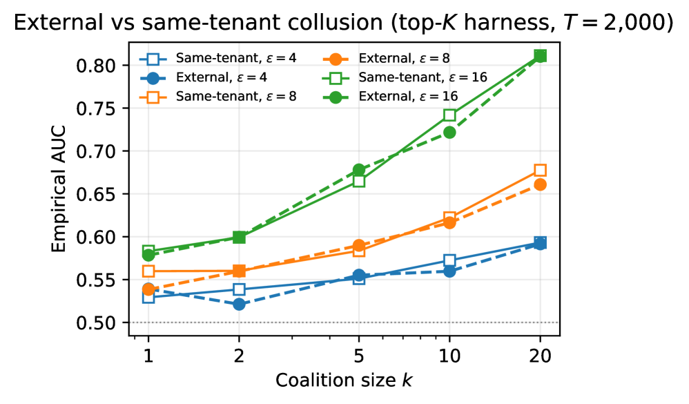
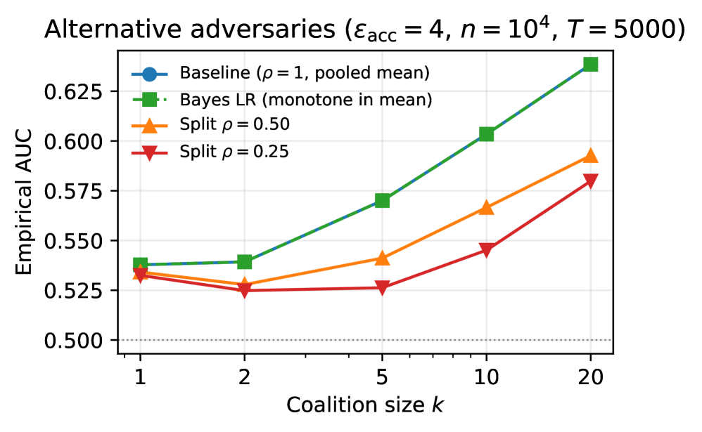

Key claim: Per-account DP guarantees in multi-tenant RAG structurally understate joint leakage under account collusion; key observation: the degradation rate is Θ(√k·ε_acc) and is empirically verifiable via a novel audit protocol.
本文揭示了多租户RAG系统中，多个账户合谋会系统性削弱单账户差分隐私保证，退化率为Θ(√k·ε_acc)。作者设计并验证了首个无需修改部署的审计协议，能够针对检索分数通道发布量化(PASS, ε_audit)判决，填补了理论与实际威胁模型之间的空白。
Deep Note — collusion-rag-audit
Key Takeaways - Same-index multi-account collusion degrades per-account DP guarantees at a rate of Θ(√k·ε_acc) for Gaussian-noised retrieval. - First audit protocol for unmodified multi-tenant RAG deployments that issues a quantitative (PASS, ε_audit) verdict for the retrieval-score channel. - Empirical validation confirms the √k scaling trend for membership inference AUC against two falsification gates. - Protocol composes generic cryptographic primitives (Merkle ledgers, ZK proofs) with six RAG-specific primitives without index disclosure. - Identifies and corrects a δ-accounting error in naive multi-account composition, requiring δ_policy > k_max·δ_acc.
0) Metadata
- Title: Auditing Privacy in Multi-Tenant RAG under Account Collusion
- Alias: collusion-rag-audit
- Authors: Florian A. D. Burnat, Brittany I. Davidson
- arXiv ID: 2605.19847
- Published:
- Links:
- Abs: https://arxiv.org/abs/2605.19847
- HTML: https://arxiv.org/html/2605.19847v1
- PDF: https://arxiv.org/pdf/2605.19847
- Tags: differential-privacy, retrieval-augmented-generation, multi-tenant, account-collusion, audit-protocol, zero-knowledge-proofs
- Domains: system_safety, cryptography
- Rating: 5/5 (base 1 + quality 2 + observation 2)
1) Why-read
Key claim: Per-account DP guarantees in multi-tenant RAG structurally understate joint leakage under account collusion; key observation: the degradation rate is Θ(√k·ε_acc) and is empirically verifiable via a novel audit protocol.
2) CRGP
C — Context
Production RAG services (e.g., Microsoft 365 Copilot, OpenAI Assistants) are multi-tenant and advertise per-account differential privacy. Recent membership inference attacks treat a single attacker as the unit of analysis, but multi-account abuse is an operational reality. Regulatory frameworks like the EU AI Act require auditable disclosure without model or data exposure.
R — Related work
- Single-attacker RAG MIA (Naseh2025-riddle, Gao2025-dcmi, Li2025-generating, Wang2025-leaks, Liu2024-mask) treat k=1 and stateless API.
- Federated learning collusion (Lyu2023-cerberus, Pasquini2022-eluding) models coordination at training time against gradient aggregation.
- DP-RAG defenses (Cheng2025-remoterag) modify deployments to leak less per query; this work leaves deployment intact.
- DP composition theory (DworkRothblumVadhan2010, KairouzOhViswanath2017, VadhanWang2021-concurrent) provides the rate but not the threat model.
G — Gap
Existing per-account DP guarantees assume a single attacker (k=1), but production RAG accounts are cheap and adversaries can pool multiple accounts. No prior work formalizes the privacy degradation under same-index multi-account collusion or provides an audit protocol that works against unmodified deployments without index disclosure.
P — Proposal
The paper defines (ε,δ,k)-collusion DP for multi-tenant RAG and proves a tight Θ(√k·ε_acc) degradation rate for Gaussian-noised retrieval. It designs a verifier-runnable audit protocol using cryptographic primitives (Merkle ledgers, ZK proofs, Gaussian noise attestations) and six RAG-specific primitives to issue a (PASS, ε_audit) verdict for the retrieval-score channel without modifying the deployment.
---
4) Experiments
Main results
Empirical AUC-vs-k curve on a synthetic multi-tenant FAISS-based harness confirms the √k trend: at fixed per-account budget, AUC = 1/2 + Θ(√k·ε_acc). The trend survives top-K post-processing and a trained embedder at the parameters tested. Two falsification gates (slope and tightness) plus one diagnostic (scale collapse) are passed.
Ablation
Ablation confirms that the √k scaling holds under top-K post-processing and with a trained embedder; alternative-adversary robustness is also verified. The Rényi-DP moments accountant gives tighter realized (ε,δ) pairs than the closed-form bound at moderate k.
Limitations
['Generation-channel privacy (LLM output conditioned on selected documents) is explicitly scoped out; only the retrieval-score channel is audited.', 'The protocol assumes the provider honestly follows the commitment phase; malicious providers could deviate before attestation.', 'Empirical validation is on a synthetic deployment; real-world production RAG services may have additional complexities (e.g., caching, rate-limit evasion).']
5) Why it matters
- Directly addresses a realistic threat model (multi-account collusion) that is operationally relevant for production RAG services.
- Provides a practical audit protocol that aligns with regulatory requirements (EU AI Act, DSA) for third-party audit without data disclosure.
- Bridges the gap between DP theory and empirical MIA by deriving and validating a RAG-specific MIA prediction.
- Highlights that multi-account abuse is not just fraud but a privacy boundary failure, reframing operational practices.
6) Next steps
- [ ] Extend the audit protocol to cover the generation channel (LLM output privacy) and compose with the retrieval-score audit.
- [ ] Test the protocol on real-world production RAG deployments (e.g., Microsoft 365 Copilot, OpenAI Assistants) with provider cooperation.
- [ ] Develop a coalition-size estimator that works under adaptive adversaries and dynamic account creation.
- [ ] Explore alternative noise mechanisms (e.g., Laplace) and their collusion degradation rates.
- [ ] Integrate the audit protocol into existing DP-RAG defense frameworks (e.g., Cheng2025-remoterag) for end-to-end verification.
7) Scoring
5/5 = base 1 + quality 2 + observation 2
审计多租户RAG中的账户合谋隐私泄露
主要结论 - 相同索引的多账户合谋使高斯噪声检索的每账户DP保证以Θ(√k·ε_acc)速率退化。 - 首个针对未修改多租户RAG部署的审计协议，可发布检索分数通道的量化(PASS, ε_audit)判决。 - 实验验证了成员推断AUC随k呈√k增长趋势，并通过了两个伪造门测试。 - 协议将通用密码学原语（Merkle账本、ZK证明）与六个RAG特定原语组合，无需泄露索引。 - 发现并纠正了朴素多账户组合中的δ核算错误，要求δ_policy > k_max·δ_acc。
1) 阅读理由
核心主张：多租户RAG中的每账户DP保证在账户合谋下系统性低估了联合泄露；关键发现：退化率为Θ(√k·ε_acc)，且可通过新型审计协议进行实证验证。
2) CRGP（背景 / 相关工作 / 差距 / 方案）
背景：生产级RAG服务（如Microsoft 365 Copilot、OpenAI Assistants）为多租户架构，并宣称提供每账户差分隐私。现有成员推断攻击将单一攻击者作为分析单元，但多账户滥用是操作现实。欧盟AI法案等监管框架要求在不暴露模型或数据的情况下进行可审计披露。
相关工作：单攻击者RAG MIA（Naseh2025-riddle等）假设k=1且API无状态；联邦学习合谋（Lyu2023-cerberus等）在训练时针对梯度聚合建模协调；DP-RAG防御（Cheng2025-remoterag）修改部署以减少每次查询泄露，本文保持部署不变；DP组合理论（DworkRothblumVadhan2010等）提供了速率但未涉及威胁模型。
差距：现有每账户DP保证假设单一攻击者（k=1），但生产RAG账户成本低廉，攻击者可汇集多个账户。尚无工作形式化相同索引多账户合谋下的隐私退化，或提供针对未修改部署且无需索引泄露的审计协议。
提案：本文定义了多租户RAG的(ε,δ,k)-合谋DP，并证明了高斯噪声检索下严格的Θ(√k·ε_acc)退化率。设计了验证者可运行的审计协议，使用密码学原语（Merkle账本、ZK证明、高斯噪声证明）和六个RAG特定原语，在不修改部署的情况下为检索分数通道发布(PASS, ε_audit)判决。
3) 实验
主要结果：在基于FAISS的合成多租户测试平台上，实证AUC随k变化的曲线确认了√k趋势：在固定每账户预算下，AUC = 1/2 + Θ(√k·ε_acc)。该趋势在top-K后处理和训练嵌入器下依然成立。通过了两个伪造门测试（斜率门和紧致门）以及一个诊断测试（尺度崩溃）。
消融实验
消融实验确认√k缩放关系在top-K后处理和训练嵌入器下成立；替代攻击者的鲁棒性也得到验证。Rényi-DP矩会计在中等k下比闭式界给出更紧的(ε,δ)对。
局限性
['生成通道隐私（LLM基于选定文档的输出）被明确排除在外，仅审计检索分数通道。', '协议假设提供者诚实遵循承诺阶段；恶意提供者可能在证明前偏离。', '实证验证基于合成部署；真实生产RAG服务可能存在额外复杂性（如缓存、速率限制规避）。']
4) 重要性
- 直接针对生产RAG服务操作相关的现实威胁模型（多账户合谋）。
- 提供符合监管要求（EU AI法案、DSA）的实用审计协议，无需数据披露即可进行第三方审计。
- 通过推导并验证RAG特定的MIA预测，弥合了DP理论与实证MIA之间的差距。
- 强调多账户滥用不仅是欺诈问题，更是隐私边界失效，重新定义了操作实践。
5) 下一步
- [ ] 将审计协议扩展至生成通道（LLM输出隐私），并与检索分数审计组合。
- [ ] 在真实生产RAG部署（如Microsoft 365 Copilot、OpenAI Assistants）上测试协议，需提供者合作。
- [ ] 开发适用于自适应攻击者和动态账户创建的联盟规模估计器。
- [ ] 探索替代噪声机制（如Laplace）及其合谋退化率。
- [ ] 将审计协议集成到现有DP-RAG防御框架（如Cheng2025-remoterag）中，实现端到端验证。
![Figure 7 : Coalition-size estimator calibration on the toy harness ( A = 30 A=30 , n = 100 n=100 , d = 32 d=32 , 200 200 trials per cell). (a) Null FPR as a function of the proximity threshold θ \theta ; the operating point θ ∗ = 0.80 \theta^{*}=0.80 achieves FPR = 0.040 =0.040 . (b) Mean k ^ \hat{k} at k true = 10 k_{\text{true}}=10 for the three attack patterns; the estimator transitions from a merged graph ( k ^ = A \hat{k}=A at low θ \theta ) to exact recovery ( k ^ = 10 \hat{k}=10 ) across the same window. At θ ∗ \theta^{*} , TPR = 1.00 =1.00 at all four tested k true ∈ { 2 , 5 , 10 , 20 } k_{\text{true}}\in\{2,5,10,20\} for all three patterns, with k ^ \hat{k} exactly recovering k true k_{\text{true}} .](figures/1174/fig_006.png)
![Figure 6 : Production-scale HNSW on 10 6 10^{6} MS MARCO passages, bge-small-en-v1.5 embedder, HNSW ( M = 64 , 𝖾𝖿 cstr = 200 , 𝖾𝖿 q = 128 ) (M{=}64,\mathsf{ef}_{\text{cstr}}{=}200,\mathsf{ef}_{\text{q}}{=}128) , Δ = 0.133 \Delta=0.133 , T = 2 , 000 T=2{,}000 . (a) User-observable hit-indicator AUC: chance at scale (curves flat across k k ). (b) Auditor-observable pooled noisy-score at the planted slot: monotone curve preserved at ε acc ∈ { 8 , 16 } \varepsilon_{\text{acc}}\in\{8,16\} . The two panels show different observation surfaces: (a) is what an attacker account sees; (b) is exposed only by the audit protocol’s per-query attestations.](figures/1174/fig_005.png)


1 k>1 . No alternative adversary tested exceeds the baseline k \sqrt{k} rate." loading="lazy">![Figure 2 : Empirical membership-inference AUC against coalition size k k . (a) Scalar mechanism ℳ ∗ \mathcal{M}^{*} : the lower-bound construction of Theorem 3.5 at n = 10 000 n=10\,000 queries, ε acc ∈ { 1 , 2 , 4 } \varepsilon_{\text{acc}}\in\{1,2,4\} , T = 10 000 T=10\,000 trials. Empirical curves match the predicted 1 2 + 1 2 Φ ( k ε acc / ( 4 log ( 1 / δ acc ) log ( 1.25 / δ q ) ) ) \tfrac{1}{2}+\tfrac{1}{2}\Phi(\sqrt{k}\,\varepsilon_{\text{acc}}/(4\sqrt{\log(1/\delta_{\text{acc}})\log(1.25/\delta_{q})})) within one standard error in every cell. (b) Full top- K K harness: same probe attack issued through MultiTenantRAGService with K = 5 K=5 , 50 50 background documents, embedding dimension 32 32 , n = 200 n=200 , T = 2 000 T=2\,000 trials. Test statistic is the count of queries for which the target document index appears in the returned top- K K . Looser ε acc ∈ { 4 , 8 , 16 } \varepsilon_{\text{acc}}\in\{4,8,16\} is required to resolve the curve at finite T T (see Section 4.4 ). The k \sqrt{k} scaling is preserved through the top- K K post-processing, with a constant-factor degradation that we quantify below.
Markers are empirical means with normal-approximation ± 1 \pm 1 standard-error bars; dotted line at AUC = 1 / 2 =1/2 marks chance. δ acc = 10 − 6 \delta_{\text{acc}}=10^{-6} throughout.](figures/1174/fig_001.png)